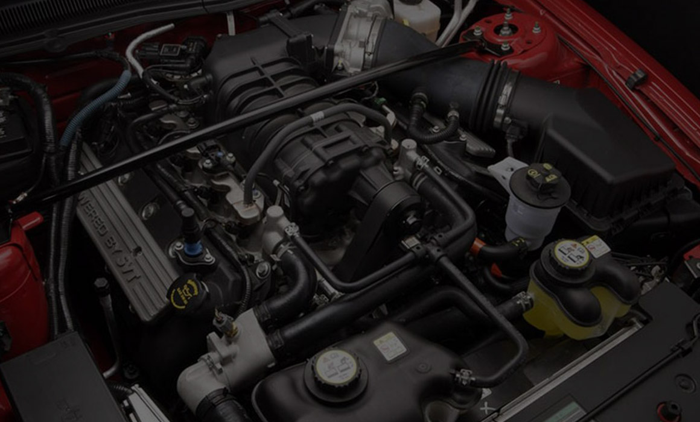

<div class="card">
  <div class="head">
    <h5>Servicio de Vigia Motor</h5>
  </div>
  <div class="body">
    <section aria-label="Newest Photos">

      <div class="carousel" data-carousel>

        <button class="btn prev" data-carousel-btn="prev"><i class="fa-solid fa-arrow-left"></i></button>
        <button class="btn next" data-carousel-btn="next"><i class="fa-solid fa-arrow-right"></i></button>

        <ul data-slides>
          <li class="slide" data-active>
            
          </li>

          <li class="slide">
            
          </li>

          <li class="slide">
            
          </li>

          <li class="slide">
            
          </li>

          <li class="slide">
            
          </li>
        </ul>

      </div>

    </section>
  </div>
  <div class="footer">
    <p><b>VIGIA</b> de motor avisa cuando la temperatura se eleva a niveles críticos o que la presión de aceite
      disminuya peligrosamente </p>
    <button>Ver más</button>
  </div>
</div>
